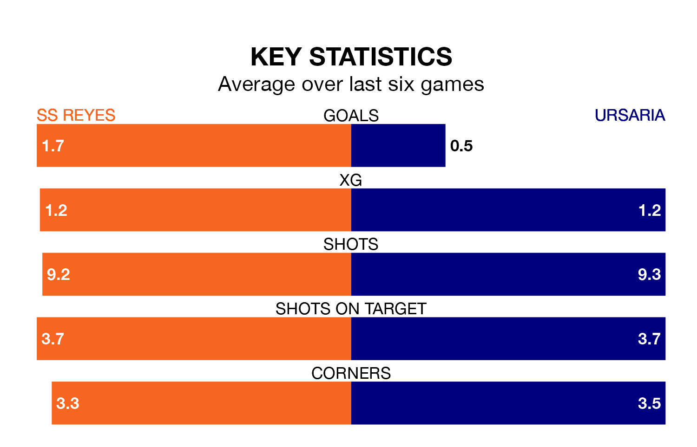

SS Reyes are heavy favourites to keep all three points at home in Sunday's early kick-off against Ursaria.
SS Reyes, who sit third in Segunda División RFEF Group 5 with 19 games played, are priced at 1.6 to seal victory at the Estadio Municipal Nuevo Matapiñonera.
Sitting nine places and seven points behind them in the table, Ursaria are 5.5 to win with *Betting Company*, while the draw is at 3.4.
With 26 goals in 19 games so far this season, SS Reyes are scoring more than average in the league with 1.4 goals per game. And they are conceding fewer than average, letting in 12 goals at a rate of 0.6 per game.
Ursaria, meanwhile, are average scorers, with 1.1 goals per game. They have conceded 1.2 goals per game.
The home side are in reasonable form in Segunda División RFEF Group 5, with three wins and two draws from their last six games.
With a win and a draw over that period, the visitors' form is much worse – they have taken four points from 18, compared to SS Reyes's 11.
SS Reyes's last match was on Sunday, a 0-0 draw against UD San Fernando.
Ursaria drew 2-2 with CD Mensajero last time out, also on January 21.
Updated: 08:51 (UTC), 25/01/24